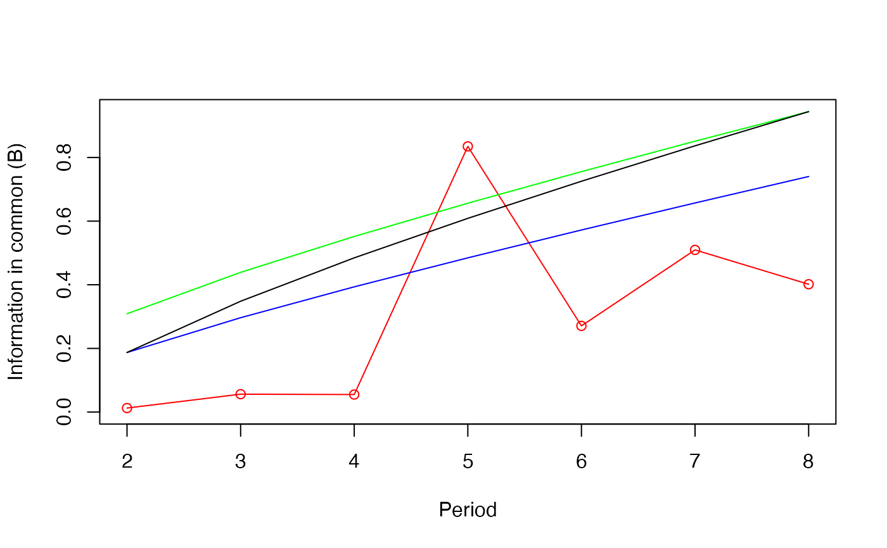

Function to compute a contingency periodogram for a univariate series of qualitative data
Cperiodogram(x, T1 = 2, T2 = NULL, nperm = NULL, alpha = 0.05, graph = TRUE)a qualitative variable (factor)
first period included in the calculations (default: T1 = 2)
last period included in the calculations (default: T2 = n/2)
Number of permutations for the chi-square test. For chi-square
tests using the chi- square distribution, use the default nperm=NULL
significance level for computation of the confidence limits
a logical indicating if a graph is requested, by default
TRUE.
A table with the statistics for the selected periods:
Wilks' chi-square statistic (Wilks.chisq)
information in common (B),
degrees of freedom (df),
p-value (prob)
Confidence interval limits:
critical value of B without correction (B.crit),
critical value of B with Bonferroni correction based on the number of periods studied in the periodogram (B.crit.Bonf),
critical value of B with progressive Bonferroni correction (B.prog.Bonf).
The contingency periodogram of Legendre et al. (1981) identifies periodic components in qualitative data vectors. The vector may contain classes of a qualitative variable or the classes obtained by hierarchical clustering or partitioning of a multivariate data table. The method is also described in Legendre & Legendre (2012). The optional graph produced by the function shows the following information:
In red: the B statistics (information in common).
In blue: Confidence limits for B without correction.
In green: Bonferroni-corrected limits of the confidence intervals.
In black: Confidence limits with progressive Bonferroni correction.
Legendre, L., M. Fréchette & P. Legendre. 1981. The contingency periodogram: a method of identifying rhythms in series on nonmetric ecological data. Journal of Ecology 69: 965-979.
Legendre, P. and Legendre, L. 2012. Numerical Ecology. 3rd English ed. Elsevier, Amsterdam
# Data from the numerical example of Subsection 12.4.2 of Legendre and Legendre (2012).
test.vec <- c(1,1,2,3,3,2,1,2,3,2,1,1,2,3,3,1)
# Periodogram with tests using the chi-square distribution
res <- Cperiodogram(test.vec)
#> Warning: Chi-squared approximation may be incorrect
#> Warning: Chi-squared approximation may be incorrect
#> Warning: Chi-squared approximation may be incorrect
#> Warning: Chi-squared approximation may be incorrect
#> Warning: Chi-squared approximation may be incorrect
#> Warning: Chi-squared approximation may be incorrect
#> Warning: Chi-squared approximation may be incorrect

# Periodogram with permutation tests
res <- Cperiodogram(test.vec, nperm=2000, graph=FALSE)